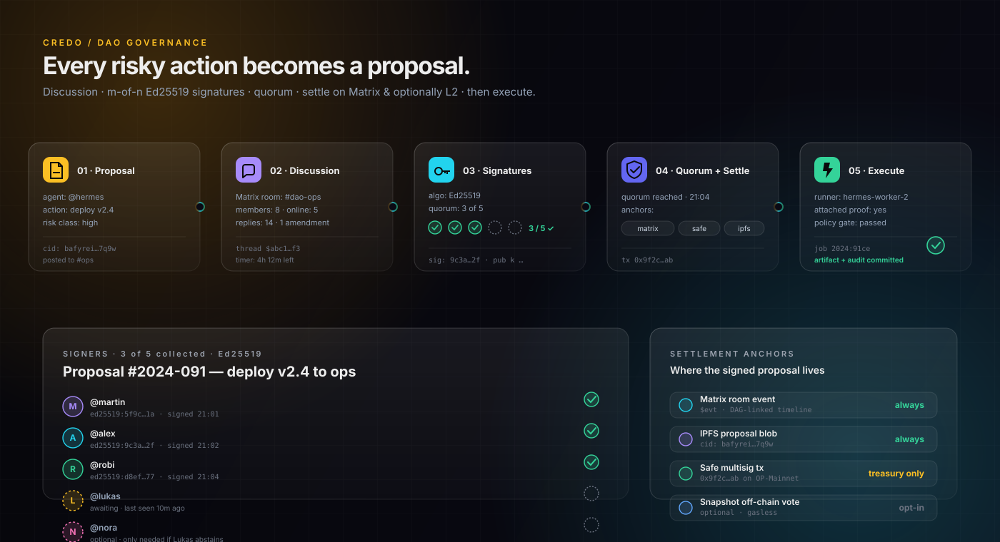

ARCHITECTURE
Nine planes. One operating model.
Access, Matrix, Bridges, Gateway, Runtime, Data, Context, Voice, Ops — each plane does one job, well.

Self-hosted Matrix backbone. Every action signed Ed25519. Proposals, m-of-n quorum and execution — on Matrix, on Safe, on L2. Multi-agent operations your DAO can actually verify.
Decentralisation without open source is just outsourcing. Every layer of the credo stack points to a project with a public source repo, a known license and a community you can join — no closed coordinators, no hidden control planes, no rug pulls.
Every dependency has a public repo and a known license. credo.lock ships an SPDX SBOM so you can prove the chain of trust to a reviewer or a regulator.
If a project changes license (looking at you, post-2024 Redis), we have a fork ready: Valkey replaces Redis, Headscale stands in for closed coordinators. You can run a hard fork tomorrow.
Swap any component without rewriting the rest. PostgreSQL ↔ CockroachDB. MinIO ↔ Garage. NetBird ↔ Innernet. The contract is the operating model, not the vendor.
“Decentralised systems run on trust. The only trust we accept is the kind you can verify yourself — by reading the code, forking it, and running your own.”
No mystery framework, no closed cloud. A small set of decisions that hold up under load and under audit.
Each agent is a Matrix participant. They talk to you, and to each other, in real rooms with real history. Add a new agent without writing glue.
Each job carries the same id from the chat event through Redis, the tool call, the artifact and the memory row. You can follow it, you can verify it.
Each agent has a written brief: who they advise, which tools they touch, which memories they recall. Tune them like profiles, not like code.
Declarative config, version-controlled like the rest of your repo. The same file binds skills, MCP servers, policy, quorum and memory access — and ships through a signed PR like any other change.
// agents/dao-treasurer.credo.ts import { defineAgent, signers, memory } from "credo"; export default defineAgent({ id: "dao-treasurer", room: "#dao-treasury", skills: ["github", "safe", "ipfs", "cal.rs"], mcp: ["obsidian", "ens", "snapshot"], policy: { risk: { low: "auto", medium: "policy-gate", high: "dao-quorum" }, quorum: signers.mOfN({ m: 3, n: 5, algo: "ed25519" }), anchors: ["matrix", "ipfs", "safe@base"], timeout: "24h", }, memory: memory.scoped({ canonical: ["proposals/*", "audits/*"], reviewed: ["briefs/*", "playbooks/*"], ephemeral: ["chat/*"], }), advise: { consultBefore: "high", peers: ["researcher", "auditor"] }, });
Credo is not a tool, it is an operating model. These seven rules apply to every run, every agent, every artifact — checked in code, signed in crypto, never just in slides.
Matrix gives you context, people, state, and a timeline you can read.
Roles, approvals and risks are decided in the backend before Redis and again before each risky tool call.
Redis and workers decouple long agent work from the chat event. The id ties them back together.
S3 or R2, Postgres rows and Matrix links keep results reachable — and signable.
Ephemeral, reviewed or canonical — never an unchecked long-term memory you can’t explain.
OpenTelemetry + Grafana make LLM, MCP, tool, RAG and sub-agent calls debuggable.
High-risk actions become proposals. m-of-n members sign with their Ed25519 device keys. Quorum is anchored to a Matrix event, an IPFS blob and — for treasury or contract changes — a Safe multisig tx on L2. No more invisible agent actions. Your DAO can verify, replay and revoke.
Access, Matrix, Bridges, Gateway, Runtime, Data, Context, Voice, Ops — each plane does one job, well.
From the human who asks, down to the disk that remembers. No magic, no surprises.

Spin up a researcher, a coder, an inbox triage, a voice concierge, a calendar pro, a personal advisor. Each lives in a Matrix room. You see who said what and why, and you can yank the plug on any single one without touching the rest.

Forget hidden tool calls. Every risky action is a proposal: discussed in a Matrix room, signed by m-of-n members with their device keys, anchored on IPFS — and for treasury or contract changes, settled with a Safe multisig tx on L2.

Every agent action carries a risk class. Low-risk runs immediately. Medium-risk waits for the policy gate. High-risk becomes a signed DAO proposal.
Configurable quorum per room and per risk class. Members sign with their device-bound Ed25519 keys — the same crypto that secures Matrix end-to-end.
Matrix event + IPFS blob is always recorded. Treasury actions add a Safe multisig tx. The result: a record no single operator can rewrite.

Intent, policy, queue, tool call, artifact, memory — the same job-id carries you through. Each stop is signed: a Matrix event, a Postgres row, an R2 object with sha256, an OpenTelemetry span tree.
A built-in DesignSkill drafts a real UI for whatever you ask. You react with ⭑ — next time it starts there, refined. Eventually every recurring action has the interface you'd have designed if you had the time.
Agent fires design.draft({intent}) → returns a UI spec.
UI renders inside the Matrix room next to the chat thread.
You react with a star — or edit slots, copy, layout. Feedback writes to memory.
Next call loads the liked variant, adapts to new context, iterates.
Stable variants are promoted to canonical UIs. Every action gets its own.
Every tile is generated on the fly, version-controlled in your vault, and re-rendered next time you ask. Your "officialized" interfaces are the ones you actually use — not the ones a designer guessed at.
Same architecture, different settings. Tune quorum, anchors and skills per room and the same Credo stack becomes a treasury copilot, a research collective, a devops coalition, or your personal operating system.
An agent drafts treasury actions in a Matrix room. Council members sign with Ed25519, the queue runs only when Safe quorum is met on L2. Auditable end-to-end.
A researcher, an auditor and a critic agent debate in #research and ship a reviewed memo.
No deploy fires without two human signatures and a green policy gate.
Calendar, inbox, memory and habits in one room. cal.rs books, Obsidian remembers, ActivityWatch grounds.
Slack, Discord, Telegram, WhatsApp and Signal bridged into Matrix. Triage, route, respond — with the same audit trail.
No master copy in someone else's cloud. Every node stores the full chronicle, end-to-end encrypted, with keys that never leave the device. If a node burns down, room state replicates from peers — the way Matrix already works.
There is no master server to breach. Matrix federates state between homeservers; credo replicates the vault between nodes. Compromise one, you don't get the rest.
Matrix E2EE for rooms. Ed25519 device keys for governance. Your private keys never leave the device that generated them — not for backups, not for "sync", not for support.
Every node carries the full chronicle: room events, signed proposals, IPFS-pinned artifacts, vault snapshots. Lose a laptop and the next one you bring online rejoins the mesh.
Credo is the operating model around your runtime, not a runtime itself. Compare the surface area.
| Capability | Credo |
Generic agent framework | Cloud agent platform |
|---|---|---|---|
| Self-hosted | ✓ end-to-end | ✓ partial | ✗ SaaS only |
| Multi-agent message bus | ✓ Matrix rooms | ~ in-memory only | ~ proprietary channels |
| m-of-n DAO governance | ✓ Ed25519 + Safe + IPFS | ✗ | ✗ |
| Cryptographic audit trail | ✓ per job · per artifact | ~ logs | ~ log dashboard |
| Verifiable memory (status) | ✓ canonical / reviewed / ephemeral | ✗ vector dump | ✗ opaque store |
| Policy gate per tool call | ✓ role + scope + risk class | ~ hand-rolled | ~ rate limits |
| Bridges to chat networks | ✓ mautrix · Slack · WA · TG · Discord | ✗ | ~ webhooks |
| OpenTelemetry across stack | ✓ LLM · MCP · tool · sub-agent | ~ partial | ~ vendor-locked |
| Your keys, your data | ✓ NetBird / WireGuard mesh | ✓ | ✗ |
| Setup cost | ~ one weekend | low | low |
| Switching cost later | low · open + Matrix-native | medium | high · vendor lock |
Start boring with Synapse. Add bridges. Add voice. Keep the audit trail untouched.
Scroll to walk the decade. Each year compounds on the last.
Boring infrastructure on purpose. Synapse + Element/Cinny, Hermes Matrix bot, Valkey queue, Postgres + pgvector, MinIO/R2 artifacts, OpenTelemetry across every tool call. NetBird + WireGuard for admin reach.
High-risk actions become signed proposals. m-of-n Ed25519 quorum per room. IPFS anchors for the blob, Safe multisig on L2 for treasury, Snapshot for gasless off-chain votes. The 7th operating rule lands: every action is signed.
A built-in DesignSkill drafts a real UI per intent. You ⭑ the good ones. Next call refines from there. After a few iterations the interface stabilises and gets promoted to canonical. The wall-of-text era ends.
Move from "self-hosted on a server" to "every device carries the full chronicle". CRDT vault for memory and proposal logs. Keys never leave the device they were generated on. Compromise one node and you don't get the rest.
Matrix federation already crosses homeservers. Now credo agents do too: a researcher from one DAO can be invited into another's room with a signed handshake. ENS names for organisations. Trust ratings between meshes.
ZK proofs replace bare signatures where privacy matters. Members prove they meet a role requirement (treasurer, council, contributor) without revealing which member they are. Provable, not visible. SNARK and STARK toolchains land in the policy gate.
Agents propose new skills as signed diffs, versioned in the vault, gated by DAO quorum before adoption. Memetic evolution of capabilities, but guarded — no agent rewrites itself without the council's signature.
Every person carries a portable credo.charter — preferences, default skills, trusted peers, memory access, allowed risk classes. It's just data, but it's yours, and it travels with you across providers, devices and DAOs.
DAOs settle with each other the way nation-states settle treaties — but in code, on L2, with auditable trails. A research collective licenses tools to a co-op via a signed credo treaty. The infra becomes diplomatic-grade.
Co-ops, neighbourhood councils, schools, libraries, and small public bodies run on the same credo stack. Not because it's revolutionary anymore, but because it became boring — the way email and the postal service became boring. Public, replaceable, civic.
Trajectory, not promise. The further out, the more honest the dotted line gets. Boring foundations are how anything past 2030 becomes possible at all.
Not yet. Credo is an architectural deck and a working MVP. The README links each component to its real repo. You can install Synapse, Hermes, Postgres and Redis today and you have the stack’s foundation running.
Because Matrix is self-hostable, federated, has rooms with strong state, and an audit-friendly event model. You own the data and the keys. Bridges let you reach Slack, Discord, Telegram and WhatsApp from the same Matrix homeserver.
Risk-classed actions become proposals. The proposal lives as a Matrix room event + an IPFS blob (deterministic CID). Members sign with their Ed25519 device keys — the same keys Matrix already uses end-to-end. When the m-of-n threshold is met, the agent gets executable authorization. Treasury or contract changes additionally settle on a Safe multisig on L2 (OP, Arbitrum or Base) so no single operator can rewrite history.
No. The baseline is Matrix + Ed25519 signatures + IPFS — fully off-chain, no gas. On-chain anchoring (Safe, Snapshot, ENS) is opt-in per room and per risk class. Use it for treasury actions, ignore it for everything else.
A built-in DesignSkill takes the action's intent (e.g. "book a barber slot") and drafts a UI spec — fields, slots, copy, layout. The spec renders inline in the Matrix room. You react with ⭑ or edit; the feedback writes to memory. Next call, the agent loads the highest-rated variant and refines from there. After a few iterations the UI stabilises and gets promoted to canonical — version-controlled in your vault. Every action you do often ends up with a bespoke interface you helped design by using it.
Yes. Matrix federates room state between homeservers; credo replicates the vault, the proposal log and the canonical memory between peer nodes. Keys never leave the device. There is no central server, no "credo cloud", no honeypot to breach. Compromise one node and you don't get the rest. Lose a laptop and the next device you bring online rejoins the mesh.
Boring foundations now → portable, civic-scale infrastructure later. The first three years (foundation, crypto, generative UI) make multi-agent ops safe and personal. The middle three (local-first, federation, ZK governance) make them sovereign. The last three (personal charter, inter-DAO settlement, civic infra) push the same stack into co-ops, neighbourhoods and public bodies. Trajectory, not promise — the further out, the more honest the dotted line gets.
Every memory entry has a status — ephemeral, reviewed, or canonical — plus a provenance trail (which job, which agent, which evidence). Agents recall by status, and humans can promote or revoke entries. No hidden, unchecked long-term memory.
Credo isn’t a framework. It’s the operating model around it. Plug Hermes, OpenClaw, Codex, or your own runtime in — Credo gives you the rooms, policy gate, queue, ledger and trace. Swap one component without rewriting the others.
Clone the repo. Read the architecture. Spin up Synapse and start sending events.